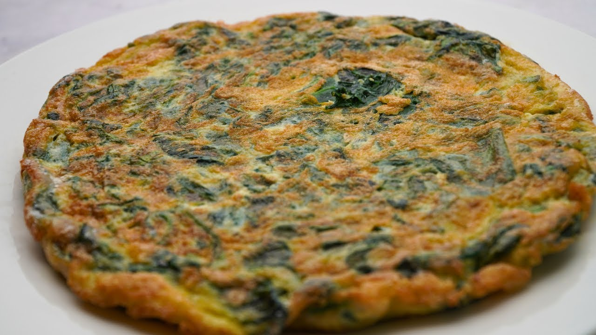

Tortilla de Claras con Espinacas

La tortilla de claras con espinacas es una receta ligera, rica en proteínas y baja en grasas. Es ideal para el desayuno, la cena o después del entrenamiento, ya que aporta nutrientes esenciales sin ser una comida pesada.